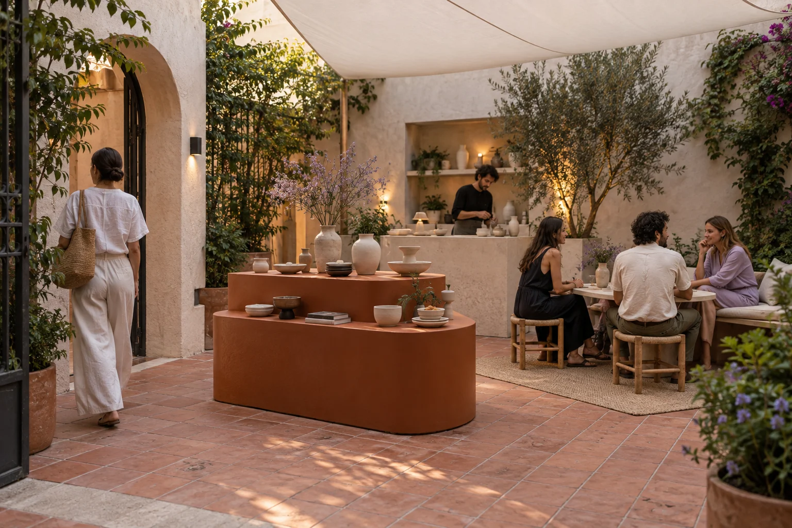

The idea.
The room.
The handover.
Choose the format around the experience people need. Our work connects content decisions to a spatial response and an agreed production scope.
Temporary exhibitions
Give a subject a physical sequence.For cultural teams and organisations with objects, stories or ideas that need more than a display wall. We clarify the content hierarchy, the visitor choices and the materials needed to support them.
- Content and object schedule
- Station layouts and interpretive graphics
- Host prompts and content handover
Starting planning discussion: 8–12 weeks. Actual scope, fees, suppliers and timing need separate agreement.
Prepare this kind of briefBrand pop-ups
Let a small offer hold the room.For independent brands and marketing teams introducing a collection or a clear product story. We organise the relationship between looking, demonstration and conversation.
- Product display hierarchy
- Demonstration and hosting sequence
- Temporary installation and supplier brief
Starting planning discussion: 6–10 weeks. Actual scope, fees, suppliers and timing need separate agreement.
Prepare this kind of briefSmall gatherings
Make the shared time purposeful.For regional teams bringing people together around a question, launch or exchange. We shape a programme with an opening, a useful shared moment and space for smaller conversations.
- Programme and content outline
- Room sequence and host handover
- Agreed supplier coordination schedule
Starting planning discussion: 5–8 weeks. Actual scope, fees, suppliers and timing need separate agreement.
Prepare this kind of briefContent first
We need a clear audience, an approved subject and someone who can make content decisions. We do not invent evidence for a brand or borrow a community history.
A defined region
Our studio is in Barcelona and our core delivery region is Catalonia. Work elsewhere needs a separate delivery and supplier arrangement.
A finite scope
Our usual starting discussion covers 20–200 intended visitors over a programme. It is not a concurrent capacity assessment. Larger programmes need a separate scope.

A studio partner.
A named owner
for every task.
We coordinate the agreed work. The client owns content approvals and guest arrangements; the venue and appointed specialists resolve real site conditions and operating requirements.
No venue hire, ticketing service, festival production or public approval is included by selecting a format here.
See the delivery responsibilities